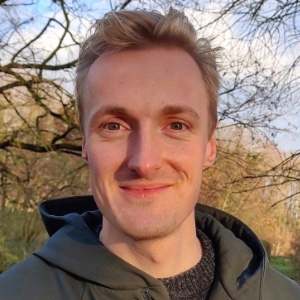

I'm a PhD student in economics at the Faculty of Economics and Business Administration of Ghent University under supervision of Kris Boudt and Koen Schoors. My research focusses on using individual-level administrative panel data to study the marginal propensity to consume.
As a physicist turned economist, I enjoy using physics inspired methodology, machine learning, econometric analysis and data science to develop models for a better world. My main research interests are (income) inequality, social mobility and (causal) machine learning in economics.
This website is a fork of the ET Jekyll theme. The design is heavily inspired by Edward Tufte.